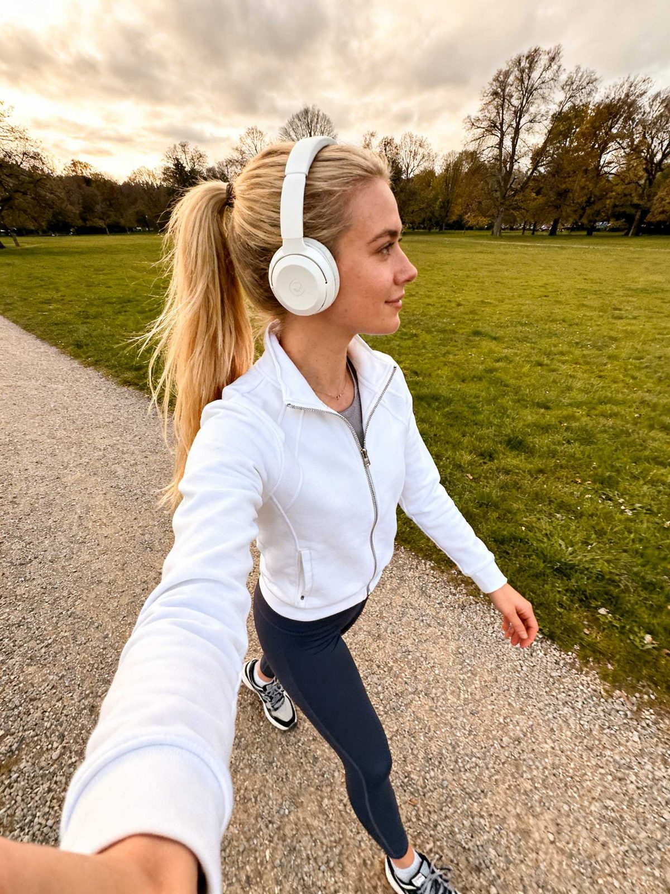
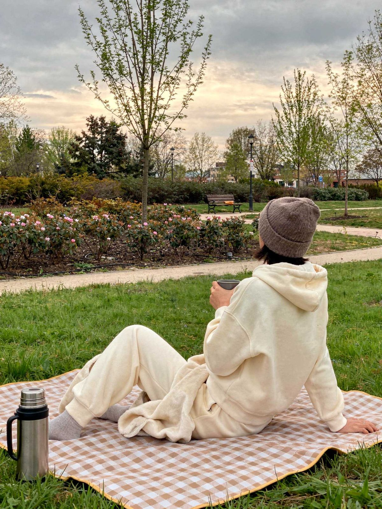
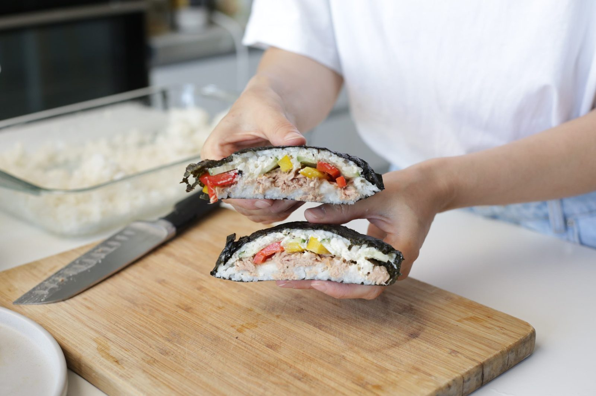
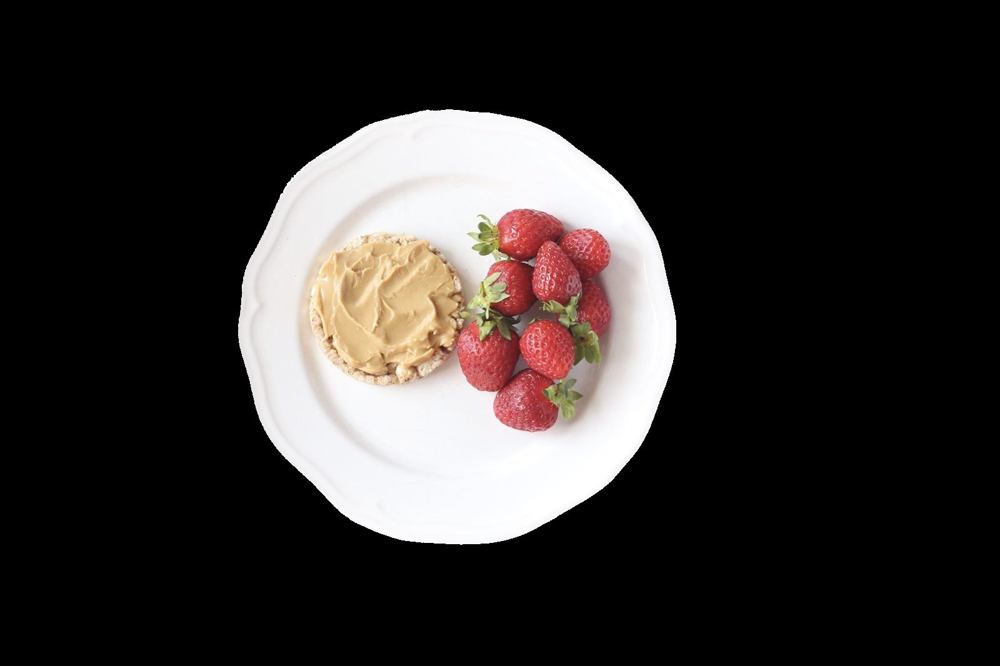
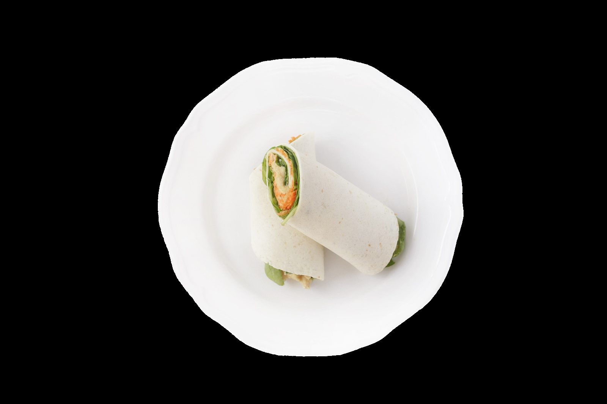
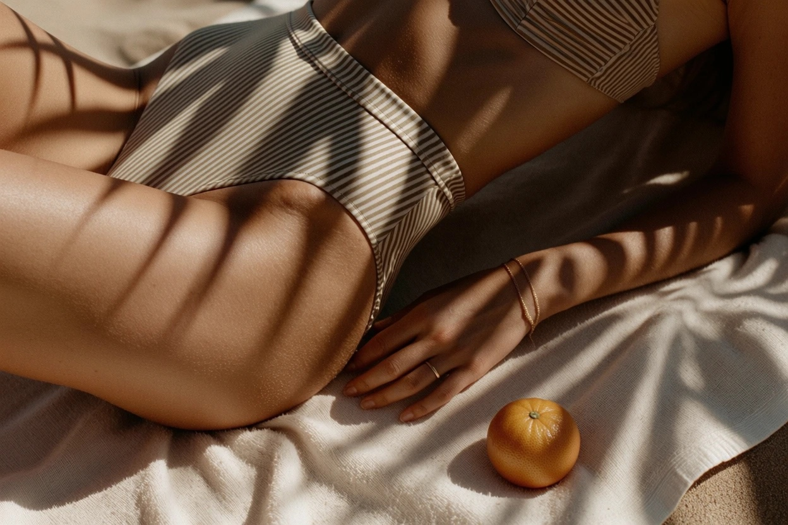

Свежий выпуск
Прогулка —
уже движение
Время для себя: как добавить движения и энергии в каждый день
Читать гид ↓
20–40
минут в день
минут в день
01 / без самокритики
Время для себя
Мы в #Sekta верим, что забота о себе — это про уважение к своим ресурсам. Если зимой движения было мало, это не повод для самокритики, а знак, что телу пора немного помочь.
02 / цифры
Международные рекомендации, на которые мы опираемся, говорят, что для отличного самочувствия не нужно жить в спортзале.
03 / почему это работает
Почему это работает
и зачем это тебе
Движение как антистресс
Регулярная активность помогает справляться со стрессом и стабилизирует эмоциональный фон.
Маленькие шаги — большой результат
Даже небольшое увеличение привычной активности, например прогулка вместо поездки на автобусе, ощутимо улучшает самочувствие.
Фокус на ценности, а не на цифры
Важно понять, что прогулка даёт именно тебе. Например: «Я гуляю, чтобы у меня были силы на интересные проекты и общение с близкими».
«Можно» вместо «надо»
Если сегодня нет настроения на длинный маршрут, разреши себе пройтись всего 5 минут. Отсутствие чувства вины — лучший двигатель долгосрочных привычек.

Купальник
не понадобится
не понадобится
04 / синрин-йоку
Лесное купание:
бесплатное спа
для мозга
Если одна мысль о тренировке пока вызывает желание поглубже зарыться в одеяло, у нас есть предложение получше. Как насчёт свидания с природой? В Японии это называют синрин-йоку, или «лесное купание»: можно «купаться» в атмосфере леса, звуках и запахах.
- «Зелёная йога» для глаз. Природные пейзажи дают глазам и вниманию ненаправленный отдых. Такой мягкий визуальный опыт может снижать когнитивную усталость.
- Смена фокуса. Взгляд свободно переключается с ближнего на дальнее расстояние, снижая напряжение глаз.
- Снижение уровня стресса. Контакт с природой помогает регулировать уровень гормонов стресса и улучшает эмоциональный фон.
- Свежий воздух. В лесу меньше городских факторов загрязнения и больше фитонцидов — летучих веществ, которые вырабатываются растениями и могут влиять на иммунитет и уровень стресса.
05 / как сделать частью жизни
Как сделать прогулки
частью жизни
Осознанность в моменте
На минуту отложи телефон и просто заметь: какого цвета сегодня небо? Как пахнет воздух после дождя?
Принимай любой результат
Если сегодня удалось дойти только до ближайшего сквера — это уже победа. «Попробовать» всегда лучше, чем «надо обязательно».
Никаких «норм» по скорости
Нет необходимости бежать или идти быстрым шагом. Гуляй так, как тебе комфортно.
06 / партнёрская подборка
Mary’s Recipes
Что положить
в корзинку
Смотри рецепты в приложении Mary’s Recipes:



07 / без коврика
Как подвигаться
без коврика
Если одной прогулки в парке мало, можно добавить тренировку. Мы подобрали три коротких видео для улицы: их можно делать в кроссовках прямо на траве или дорожке.
Важно: тебе не обязательно выполнять всё на максимум. Можно просто попробовать начать и посмотреть, как откликнется тело.


3 недели08 / #Sekta · продолжение
Фокусный онлайн-курс
Летний
прайм
В гайде — один способ добавить движения. В «Летнем прайме» — три недели коротких тренировок, ухода за собой и лёгкого рациона.
тренировки до 30 минутстарт завтрасамостоятельный формат
2 900 ₽за весь курс
Перейти к курсу ↗